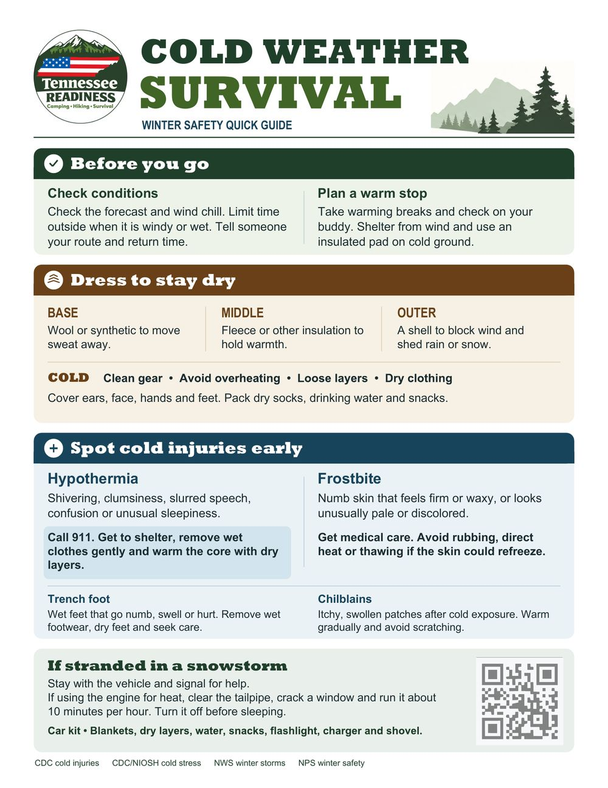

A short hike, a winter drive or an unexpected power outage can leave you in the cold longer than you planned. Here's how to prepare, stay warm, and recognize when someone needs help.
Wind pulls heat away from exposed skin. Cold ground draws heat out of your body. Rain or sweat soaks your insulation so it stops working. None of that needs a blizzard — a damp, breezy day in the Smokies can do it. Plan for delays, and act as soon as you notice someone getting cold.
The CDC notes hypothermia can happen even above 40°F if a person gets chilled from rain, sweat or cold water.
Temperature, wind chill, rain or snow, and any alerts. Wind chill describes how fast wind and cold pull heat from exposed skin.
How long you'll be out, how hard you'll be working, and where you can warm up. Build in warming breaks.
Tell someone your route and when you'll be back. Go with a buddy when you can.
Turn around early if conditions get worse, your gear gets wet, or someone can't stay warm.
Wool or synthetic next to your skin pulls moisture away. Skip cotton — it holds water.
Fleece, wool or other insulation traps the heat your body makes.
A shell stops the wind and sheds rain and snow so the layers underneath stay dry.
Cover your head, ears, hands and feet. Pack spare socks, gloves and a dry layer where you can reach them fast.
Dirt and sweat mat down insulation. Check your layers and fix damage before you head out.
Open vents or shed a layer before you sweat. Add insulation when you stop.
Leave room for insulation. Avoid boots or gloves that squeeze.
Brush off snow before it melts. Change wet socks and gloves right away.
COLD is a classic outdoor rule of thumb, taught by Scouting America and others — not an official medical standard.
Get out of the wind and away from rain and snow — behind rock, trees, a vehicle or a tarp.
Put an insulated pad between you and cold ground or snow — including under your sleeping bag.
Cold, dry air dries you out. Carry water in an insulated bottle so it doesn't freeze, and drink regularly.
Your body burns fuel to stay warm. Pack high-energy snacks you can eat with cold hands.
Catch them early. If you're ever unsure how serious it is, call 911.
This is general information, not a substitute for first-aid training or medical care. See our class schedule for hands-on skills.
Mountain roads can close fast. A kit in the car turns a long, cold wait into an inconvenience.

The whole guide on a single letter-size sheet. Print one for the glove box, one for your pack and one for the fridge. When you're cold and stuck, you won't want to be scrolling.
Stop by Tennessee Readiness before your next winter hike or drive. We'll help you think through your layers, your kit and your plan, right here in Cosby.
5036 Hooper Hwy, Cosby, TN 37722 · Open Wednesday–Saturday 10AM–6PM · Monday, Tuesday & Sunday hours vary — call ahead
Safety figures on this page come from the sources below: hypothermia above 40°F (CDC); boiling times (CDC); generator distance (CDC); trench foot up to 60°F and warming the center of the body first (CDC/NIOSH); frostbite care (American Red Cross); and what to do if stranded in a vehicle (National Weather Service). The COLD acronym is a common outdoor rule of thumb.